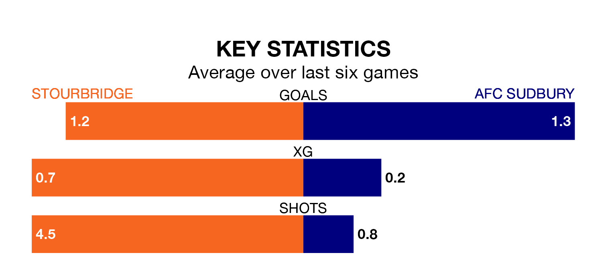

Stourbridge host AFC Sudbury on Saturday in the Southern League Premier Central.
In their last league match, on March 9, Stourbridge beat Leiston 1-0 away.
Sudbury also won, 1-0 at home against AFC Telford United.
Sudbury are 18th in the table after 34 games, of which they have won nine and drawn nine, earning 36 points.
Stourbridge are four places ahead of the visitors in 14th, with 11 wins and six draws putting them on 39 points.
The home side are in disappointing form in the Southern League Premier Central, with one win and three draws from their last six games.
With two wins and two draws over that period, Sudbury's form is slightly better – they have taken eight points from 18, compared to Stourbridge's six.
With 44 goals in 34 games so far this season, Sudbury are scoring at below the league average rate with 1.3 goals per game. And they are conceding at an average rate, letting in 51 goals at a rate of 1.5 per game.
Stourbridge, meanwhile, are average scorers, with 1.5 goals per game. They have conceded 1.4 goals per game.
Updated: 15:10 (UTC), 15/03/24